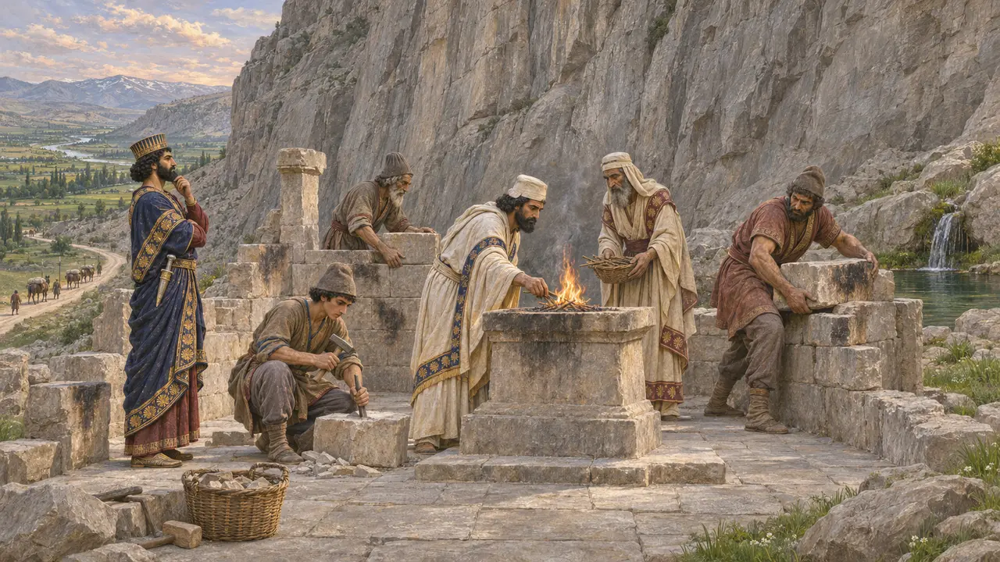
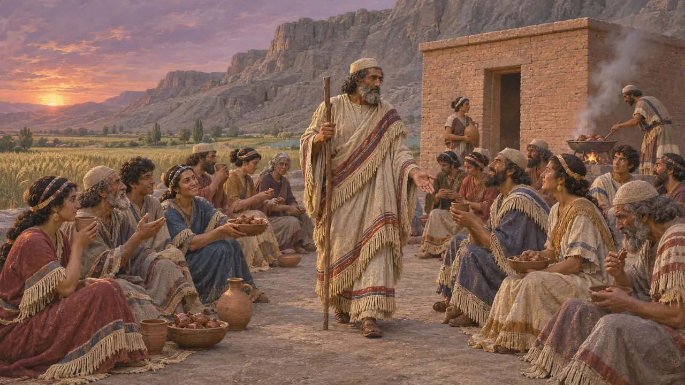

アフラマズダと「存在する神々」
碑文に見える王の神、紀元前522〜479年
ダレイオスは自分がアフラマズダの恩寵によって王であると語り、碑文がそれと違うことを言うことは一度もない。だが碑文は「存在するほかの神々」にも祈っている。この言い回しは扉を開けたままにしており、粘土板はその扉からまっすぐ入っていく。
ゲームでは： どのレベルでもペルシアの信仰はこうなっている：聖域またはマギの祭壇、ラン供物と王のための供犠、そしてそれぞれの祭り。

アフラマズダの恩寵によって
同時代の記録ベヒストゥン碑文は繰り返しこう述べる。ダレイオスが王位にあるのは、アフラマズダがそれを授けたからだと。ナクシェ・ロスタムの墓碑文は、この大地とあの天空、人間と人間の幸福を造り、ダレイオスを王とした偉大な神から語り始める。
Behistun, DB 5, 9; DNa 1

ほかの神々
同時代の記録ペルセポリスの祈りは、王家の神々とともにアフラマズダに、敵の軍勢と飢饉と「偽り」から国を守るよう願う。ダレイオスやクセルクセスの王碑文は、そのほかの神々の名を一つも挙げない。ミスラとアナーヒターが彼と並んで初めて名を挙げられるのはアルタクセルクセス2世の時代で、キュロスから1世紀以上のちのことだ。
DPd 3; A2Sa

クセルクセスとダエーワ
係争中クセルクセスは、ダエーワが崇められていた場所を自分は破壊し、それを崇めることを禁じたと語る。場所の名も民の名も挙げていない。学者たちはこれをバビロン、エジプト、ギリシアに結びつけ、あるいは特定の何かではなく王のなすべきことを述べた定型にすぎないとしてきた。王碑文のなかで宗教戦争に最も近い記述だが、それが何を指すのかは分からない。
XPh 4-5; Kuhrt 2007

エラム人は彼を崇めなかった
同時代の記録ベヒストゥンに後から加えられた第5欄で、ダレイオスはエラム人を不実な者と呼び、彼らはアフラマズダを崇めなかったと述べる。ところが同じころ、彼自身の行政は同じ穀物でエラムの神々の費用を賄っていた。これが何であれ、改宗政策ではない。
Behistun, DB 72, 75; Henkelman 2008
出典
- Behistun inscription (DB)
- Naqsh-e Rostam (DNa, DNb)
- Persepolis (DPd, XPh)
- Kuhrt 2007, The Persian Empire